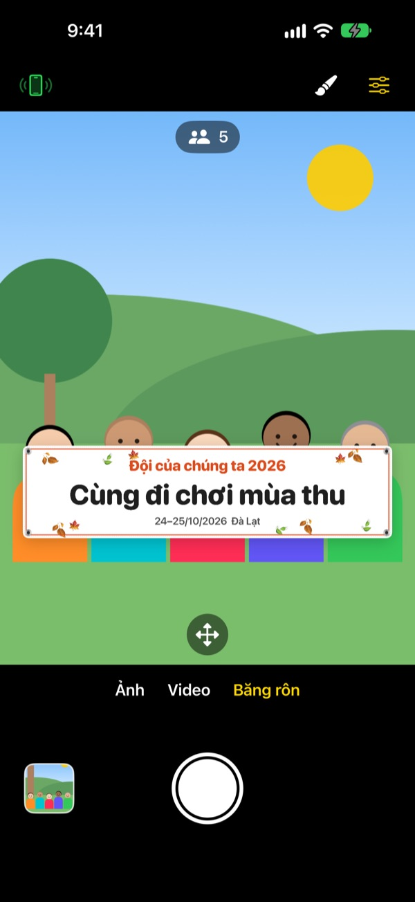
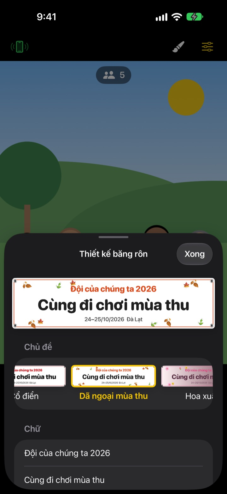

Ảnh nhóm cầm băng rôn,
không cần in băng rôn
Nhập chữ, chọn chủ đề, băng rôn trên màn hình sẽ nằm ngay trước cả nhóm. iPhone của bạn bè thành điều khiển chỉ với một lần quét QR, nên người chụp cũng có mặt trong ảnh.
Mọi tính năng đều miễn phí. Yêu cầu iOS 17 trở lên.

Thử làm một băng rôn
Sửa chữ và chạm vào một chủ đề. Nhấn nút chụp, trang sẽ đếm ngược 3 giây rồi chụp giống như trong ứng dụng.
Đặt in băng rôn chỉ để chụp một tấm ảnh?
Đặt in băng rôn cho một tấm ảnh dã ngoại, hôm đó phải mang theo, xong việc lại chẳng biết cất đâu. Không có ai chụp giúp nên lúc nào cũng có một người đứng ngoài khung hình. ShutterLink đặt băng rôn ngay trong khung hình và biến iPhone của bạn bè thành điều khiển, để ai cũng có mặt trong tấm ảnh cầm băng rôn.
Băng rôn hợp với buổi gặp mặt, xong trong một phút
Chọn một trong 13 chủ đề như dã ngoại mùa thu, hoa xuân, tiệc cuối năm, sinh nhật, ngày hội thể thao, lễ tốt nghiệp, đám cưới, hội thảo công ty, rồi tự viết ba dòng chữ.
Đổi nền, phông chữ, họa tiết, màu sắc, tỉ lệ và thêm logo của bạn. Chất liệu có vải, bạt hoặc giấy. Băng rôn vải sẽ võng xuống, nhăn nhẹ và bay trong gió như thật.

Điều khiển không cần cài đặt, chỉ cần quét QR
Chạm nút điều khiển ở góc trên bên trái, mã QR sẽ hiện ra. Bạn bè chỉ cần mở ứng dụng Camera có sẵn để quét, ShutterLink Remote sẽ mở ngay dưới dạng App Clip và kết nối.
Hình ảnh trực tiếp trên điều khiển thấy cả băng rôn, căn khung xong là bấm chụp. Ảnh chụp được gửi ngay sang iPhone điều khiển, nên bạn bè không cài ứng dụng vẫn lưu và chia sẻ được tại chỗ.
Bắt đầu với 3 bước
- 1
Dựng iPhone
Mở ShutterLink và đặt máy lên chân máy hoặc kệ.
- 2
Đặt băng rôn
Chọn Băng rôn ở phía dưới, chạm nút cọ vẽ để nhập chữ và chọn chủ đề, rồi chạm vào mặt đất nơi cả nhóm sẽ đứng.
- 3
Giơ lòng bàn tay
Giơ lòng bàn tay hoặc nhấn nút chụp trên điều khiển. Hẹn giờ đếm ngược rồi chụp.
Tính năng dành cho ảnh nhóm
- Cử chỉ lòng bàn tay · chụp bằng tiếng vỗ tay
- Giơ lòng bàn tay về phía camera hoặc vỗ tay thật to một lần để bắt đầu hẹn giờ
- Chụp khi cười
- Tự chụp khi mọi người đều mở mắt và cười
- Hẹn giờ 3 · 5 · 10 · 20 · 30 giây
- Có giọng đếm ngược, đèn flash nháy theo và điều khiển rung trong tay
- Nhắc mọi người nhìn vào camera
- Nhấn là iPhone chụp sẽ cất tiếng gọi để cả nhóm nhìn vào ống kính
- Chụp liên tiếp 3 · 5 ảnh
- Chọn sẵn tấm đẹp nhất khi mọi người đều mở mắt và cười. Có thể đổi sang tấm khác trong thư viện
- Số người · mép khung · thước cân bằng
- Đếm số người trong khung, báo khi có người sát mép và hiện thước cân bằng khi máy bị nghiêng
- Chụp ngắt quãng 3 giây đến 1 phút
- Ghi lại hoàng hôn hay quá trình làm việc theo từng khoảng
- Điều khiển camera
- Chạm để lấy nét và đo sáng, bù sáng, đèn flash, lưới, zoom từ 0,5x đến tối đa 10x (tùy máy), đổi camera trước và sau, quay video
- Chế độ đơn giản
- Điều khiển chỉ hiện một nút chụp lớn, người lớn tuổi cũng bấm dễ dàng
- Nút âm lượng · Camera Control
- Chụp ngay trên iPhone chụp mà không cần điều khiển
Ở chế độ Băng rôn không dùng được đèn flash, chụp liên tiếp, zoom và camera trước. Hẹn giờ, chụp bằng lòng bàn tay và điều khiển vẫn hoạt động bình thường.
Mọi tính năng đều miễn phí
Miễn phí
- Chế độ Băng rôn và 13 chủ đề
- Điều khiển không cần cài đặt (App Clip)
- Chụp bằng lòng bàn tay, vỗ tay, nụ cười và hẹn giờ
- Ảnh đẹp nhất, đếm người, thước cân bằng
- Quay video và chụp ngắt quãng
Ủng hộ nhà phát triển (tùy chọn)
- Gửi tiền tip nhỏ, vừa hoặc lớn trong phần Cài đặt
- Tiền tip không mở khóa hay giới hạn tính năng nào
Không phải gói đăng ký. Chỉ thanh toán một lần khi bạn gửi tip.
Không quảng cáo, không cần tạo tài khoản.
Câu hỏi thường gặp
Cần chuẩn bị gì?
Cài ShutterLink trên iPhone dùng để chụp (iOS 17 trở lên). iPhone làm điều khiển không cần cài gì, chỉ cần có Internet lần đầu mở App Clip. Bật Bluetooth trên cả hai máy và để gần nhau (thường trong vòng 10 m).
Quét QR nhưng App Clip không mở.
Kiểm tra iPhone điều khiển đã kết nối Internet chưa. Bạn cũng có thể nhập mã 4 số hiện trên iPhone chụp vào màn hình ShutterLink Remote rồi chạm Kết nối. Hãy kiểm tra App Clip không bị chặn trong Cài đặt › Thời gian sử dụng › Giới hạn nội dung & quyền riêng tư.
Bị đứng ở "Đang tìm camera…".
ShutterLink phải đang mở trên màn hình của iPhone chụp. Kiểm tra Bluetooth đã bật trong Cài đặt › Bluetooth trên cả hai máy. Mã kết nối đổi mỗi lần mở ứng dụng, nên nếu vừa mở lại ứng dụng, hãy dùng QR hoặc mã mới rồi chạm Thử lại.
Hiện thông báo "Quyền Bluetooth bị từ chối".
Bật ShutterLink trong Cài đặt › Quyền riêng tư & Bảo mật › Bluetooth. Phía điều khiển là App Clip nên có thể không có trong danh sách. Khi đó hãy quét lại QR và chạm Cho phép khi được hỏi.
Hình ảnh trực tiếp bị giật hoặc mờ.
Hình ảnh trực tiếp được thu nhỏ có chủ ý để truyền qua Bluetooth. Ảnh và video thật vẫn được lưu với chất lượng gốc của iPhone chụp. Nếu giữa hai máy có tường, có người hoặc cách xa nhau, hình có thể bị giật, nhưng nút chụp và các điều khiển khác vẫn hoạt động.
Ảnh đã chụp nằm ở đâu?
Trong ứng dụng Ảnh của iPhone chụp và thư viện trong ứng dụng. iPhone điều khiển cũng nhận được một bản sao nhưng không tự lưu, hãy lưu hoặc chia sẻ trước khi đóng điều khiển. Nếu không thấy ảnh trong Ảnh, hãy cho phép ShutterLink trong Cài đặt › Quyền riêng tư & Bảo mật › Ảnh.
Video không có tiếng.
Bật ShutterLink trong Cài đặt › Quyền riêng tư & Bảo mật › Micrô.
Có thể kết nối nhiều điều khiển không?
Có. Nhiều iPhone có thể cùng kết nối bằng một mã QR hoặc mã kết nối, bấm từ máy nào cũng chụp bằng cùng một camera.
Đang chụp thì mất kết nối.
ShutterLink giữ màn hình luôn sáng khi đang mở. Nếu bấm nút sườn để khóa máy hoặc chuyển sang ứng dụng khác, kết nối sẽ bị ngắt, vì vậy hãy để ứng dụng mở trên màn hình trong lúc chụp.
Ảnh có bị tải lên đâu không?
Không. Hai iPhone kết nối trực tiếp qua Bluetooth, ảnh và video chỉ nằm trên iPhone chụp và điều khiển đã kết nối. Dùng được cả trên núi hay ngoài biển không có sóng, và không cần tài khoản.
Vẫn chưa giải quyết được hoặc phát hiện lỗi? Hãy gửi thư đến leeo@kakao.com. Ghi kèm đời máy và phiên bản iOS của cả hai iPhone để được kiểm tra nhanh hơn.